Yolo Setup Guide
Follow this guide first to download Yolo, prepare your capture source, verify console settings, and set up your PC capture option.
Downloads
Install only what your setup needs.
Yolo
Download the latest version of Yolo — the main Yolo desktop application.
Virtual Controller
Download these only if you plan to use Virtual Controller output or XStreaming Desktop:
A. Console Setup
Prepare capture, console video settings, and optional Ethernet adapter networking.
1. Capture Card Setup
Disable HDCP before connecting your capture card or you will get a black screen.
Path: Settings → System → HDMI → HDCP → Off
Connect your capture card using the standard wiring:
- Console HDMI OUT → Capture Card HDMI IN
- Capture Card USB → PC USB 3.0 (blue port)
- Capture Card HDMI OUT → TV/Monitor (your gameplay display)
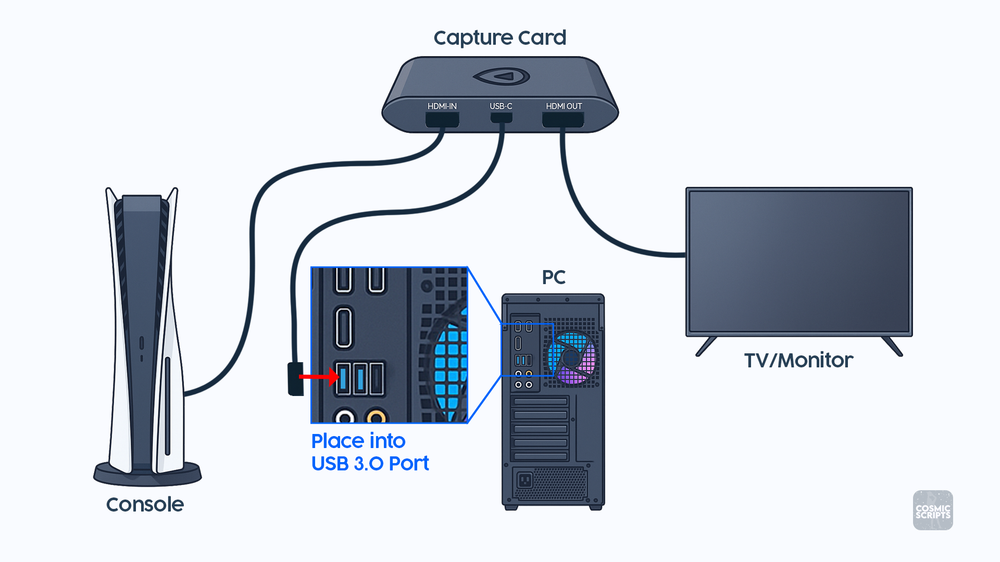
2. Console Video Settings
These settings help Yolo keep your capture clean and avoid color inconsistencies.
Video settings often reset when changing HDMI devices. Always verify them after connecting your capture card.
PlayStation 5
- HDCP: Off — Settings → System → HDMI → HDCP
- HDR: Off — Settings → Screen and Video → HDR
- VRR: Off — Settings → Screen and Video → VRR
- RGB Range: Full — Settings → Screen and Video → RGB Range
Xbox Series X|S
- HDR: Off — General → TV & display options → Video modes
- Color Space: PC RGB — General → TV & display options → Video fidelity & overscan → Color space
- Night Mode: Off — General → TV & display options → Night mode
- Color Filters: No correction selected — Accessibility → Color filters
- High Contrast: Off — Accessibility → High contrast
3. Select Your Capture Device in Yolo
After connecting the capture card and checking your console video settings:
- Close OBS, your capture-card preview software, and any other app using the capture card.
- Open Yolo.
- Open Capture Settings.
- Set Source to Device.
- Select your capture card from the Device list.
- Select 1920 × 1080 and 60 FPS when those options are available.
- Confirm that Yolo shows a live preview from your console.
Unplug and reconnect the capture card, use a USB 3.0 port, and reopen Yolo. If it is still missing, follow Capture Source Is Missing.
4. Ethernet USB Adapter Setup
An Ethernet USB Adapter is not required; however, it provides more consistent timing when using Remote Play. Using an adapter also allows you to use Yolo Link for a smoother, more consistent online experience by reducing sudden connection spikes and timing shifts.
Adapter Connection
- Ethernet cable from router to PC
- Ethernet cable from USB-Ethernet adapter to console
- USB-Ethernet adapter into USB 3.0 port (blue)
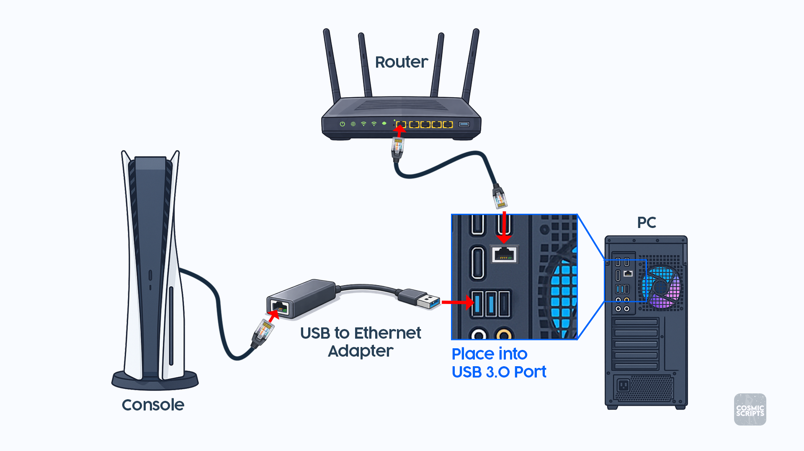
Network Sharing
This step allows your console to receive internet access through your PC when using a USB-to-Ethernet adapter or direct Ethernet connection.
If your console is connected through your PC (instead of directly to the router), Internet Connection Sharing must be enabled.
- Search PC for View Network Connections
- Identify primary adapter (Ethernet 1)
- Right-click the adapter and select Properties
- Open the Sharing tab
- Allow other network users to connect through this computer's Internet connection
- Select Ethernet 2 (if applicable)
- Click OK
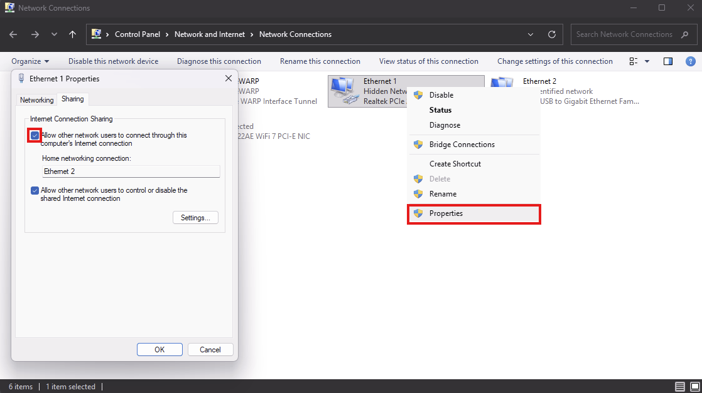
B. PC Setup (Steam)
Use display capture or a virtual capture card when Yolo runs on the same PC as your game.
1. Display Capture In Yolo
Use Yolo display capture first when Yolo is running on the same PC as the content you want to capture.
- Open Yolo.
- Open Capture Settings.
- Set Source to Display.
- Select the display you want Yolo to use.
- Choose your preferred resolution and FPS.
Use Yolo display capture first. Only use OBS Virtual Camera if display capture does not fit your setup.
2. Virtual Capture Card Setup
Use a virtual capture card, such as OBS Virtual Camera.
OBS Configuration
- Video Settings: Resolution 1920 × 1080, FPS 60
- Source Setup: Add Source → Game Capture → Mode: Capture Specific Window → Window: select your game
- Start the Virtual Camera: Controls → Start Virtual Camera
Then open Yolo:
- Open Capture Settings.
- Set Source to Device.
- Select OBS Virtual Camera.
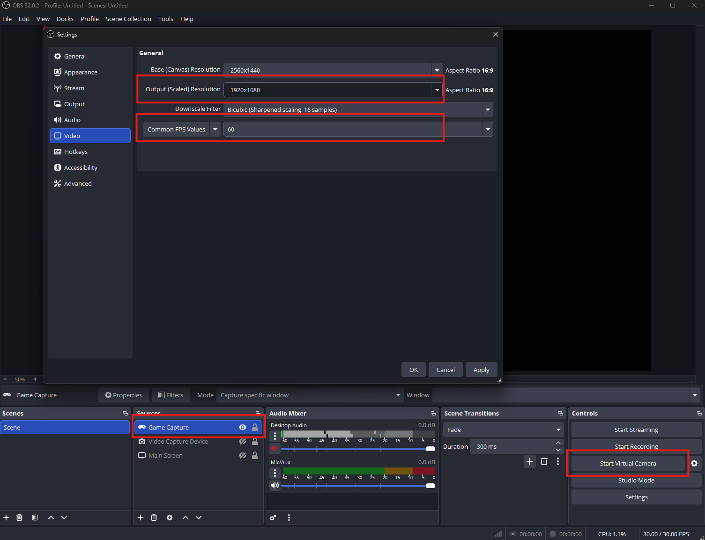
After your capture source and PC/console setup are ready, continue to the output mode that matches your setup: Titan Two · PS Remote Play · Virtual Controller
Titan Two Output
Use Titan Two when your controller output should go through a Titan Two.
Titan Two Setup (Non-PS5)
This method is used for non-PS5 users. If you are using Titan Two as your controller output:
- Connect Titan Two to PC via the PROG port.
- Connect your controller to the Titan Two's Input-A port.
- Connect Titan Two to your console via the Output port.
If you experience any issues with your Titan Two output, make sure all lights on the device are green. Adjust Output Protocol in Yolo if your setup requires it.
Titan Two Setup (PS5)
PS5 users running Titan Two must use a compatible bypass device such as the P5General, P5Mate, Cronus Zen, or Wingman FGC2.
Titan Two + P5General
This method is preferred for PS5 users. The Besavior P5General is the cheapest option and provides minimal input delay.
Unlike other connection options, the P5General requires your Titan Two Output Protocol to be set to PlayStation 5.
Connection order:
- Controller into Input-A
- P5General into Input-B
- Titan Two Output to Console
- Titan Two PROG to PC
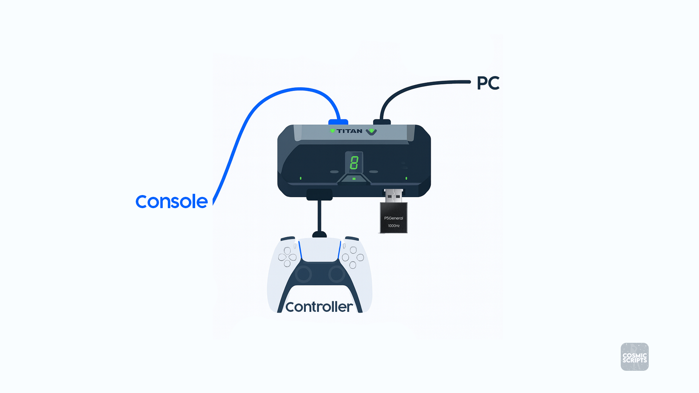
Titan Two + Zen Connection
Connection order:
- Bypass Zen with PS5
- Connect controller to Titan Two Input-A
- Titan Two PROG to PC
- Titan Two Output to Zen (final step)
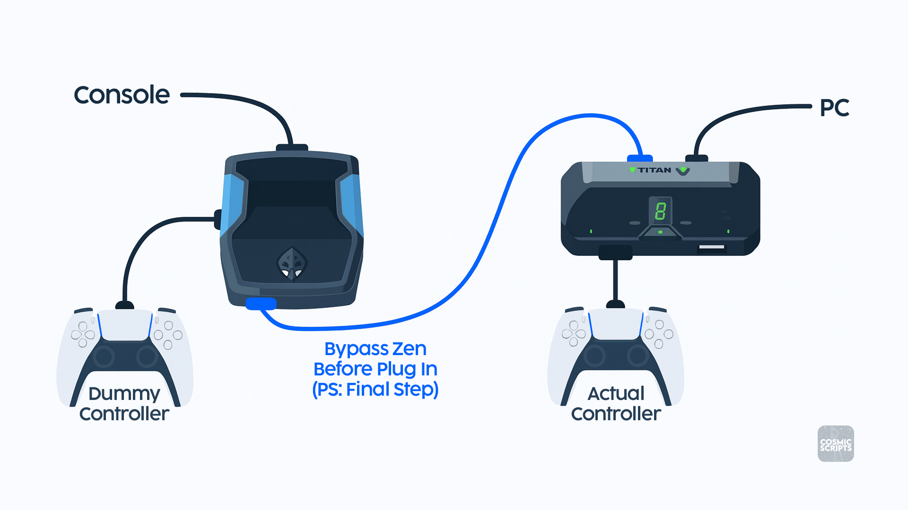
Yolo Output Setup
- Finish Setup first so your capture source is ready.
- Open Yolo.
- Set OUTPUT to Titan Two.
- Leave Output Protocol on Auto unless your setup needs PS5 or XB.
- If Yolo asks to program a Titan Two slot, use Program.
- Start your selected runtime.
Titan Two is ready when you see 3 green lights on the device and Yolo shows the Titan status as connected.
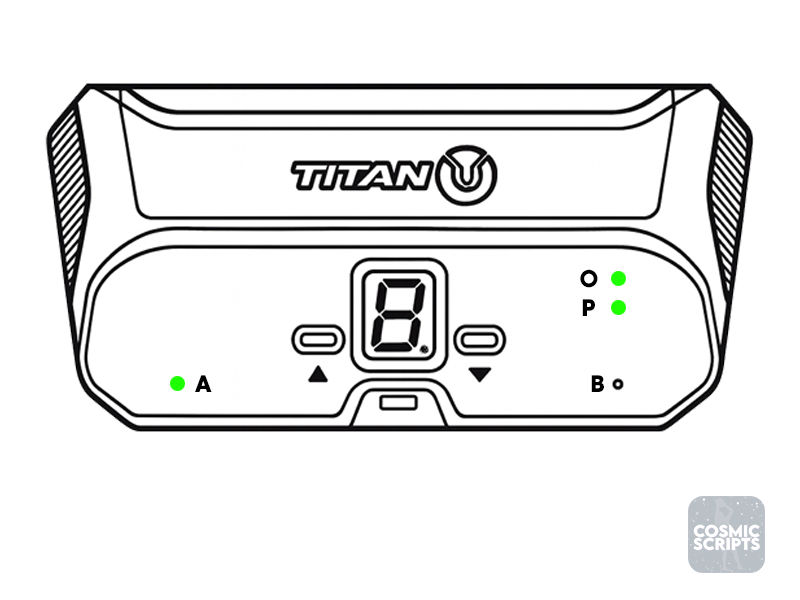
PS Remote Play Output
Use PS Remote Play when Yolo should connect to your PS5 Remote Play session.
Console And Controller Setup
- Finish Setup first so your capture source, console video settings, and Ethernet setup are ready.
- Confirm Remote Play is enabled on your PS5.
- Connect both PC and PS5 with wired Ethernet.
- Connect your controller to your PC either via cable or wirelessly.
Yolo Remote Play can accept inputs from a Cronus Zen. Connect the Zen to your PC as normal through the output port.
Opening Order
Repeat the following sequence:
- Open Yolo and set OUTPUT to PS Remote Play.
- Choose your Console.
- Add or choose your Account and follow the on-screen directions.
- In Input Selection, choose your controller.
- Start your selected runtime.
Use Manual if your console does not appear.
Account Setup
When adding your account, Yolo gives you a few options:
- Username Lookup is the easiest option.
- Account ID is useful if you already have it.
- Login is a backup if lookup does not work.
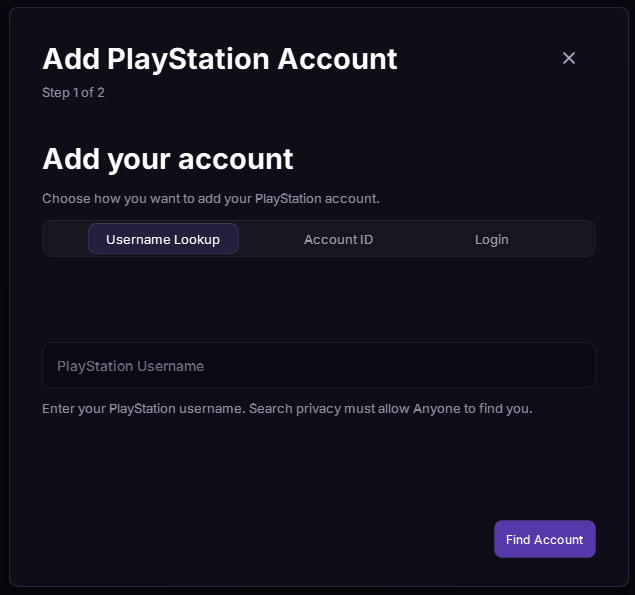
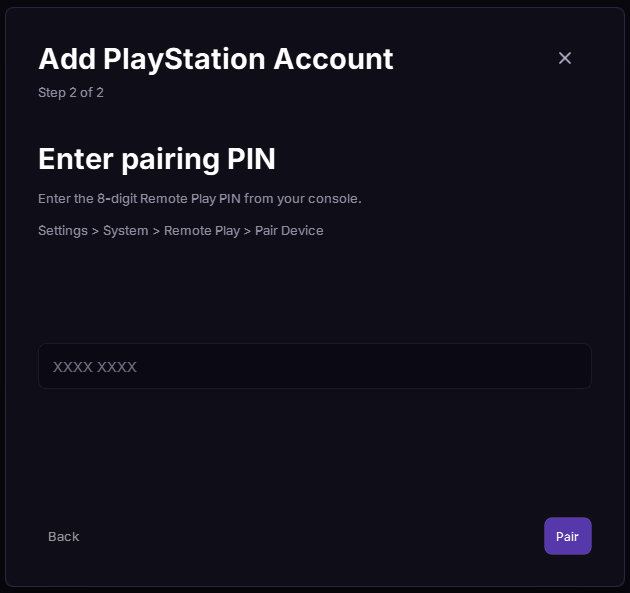
PS Remote Play is ready when Yolo shows the session as connected and your controller is selected.
Check that Remote Play is enabled, the console is awake, both devices are on the same network, and your firewall is not blocking the connection.
Virtual Controller Output
Use Virtual Controller when a PC app or remote-play app should receive controller input from your PC.
Downloads
Confirm you installed the downloads for your setup:
- Yolo
- ViGEmBus
- HIDHide
- XStreaming Desktop if you use XStreaming Desktop
Controller Setup
- Connect your physical controller to your PC.
- Open Yolo before opening the target app.
- Set OUTPUT to Virtual Controller.
- In Input Selection, choose your physical controller.
- Confirm ViGEm Client and HidHide show ready/available status.
Opening Order
- Close all target apps, including Steam, games, and remote clients. If using Steam, fully close it from the system tray.
- Open Yolo and set OUTPUT to Virtual Controller.
- Connect your physical controller, then choose it in Input Selection.
- Start your selected runtime.
- Open your target app last.
Closing Steam before opening Yolo helps the virtual controller appear in the right order.
Steam Controller Settings
Follow these steps if Steam sees the wrong controller.
- With the target app open, press Shift+Tab to open the Steam in-game menu.
- Select the Remote Play Together button.
- Drag and drop your actual controller to the X.
Click each controller until your physical controller vibrates. That is the controller you should move.
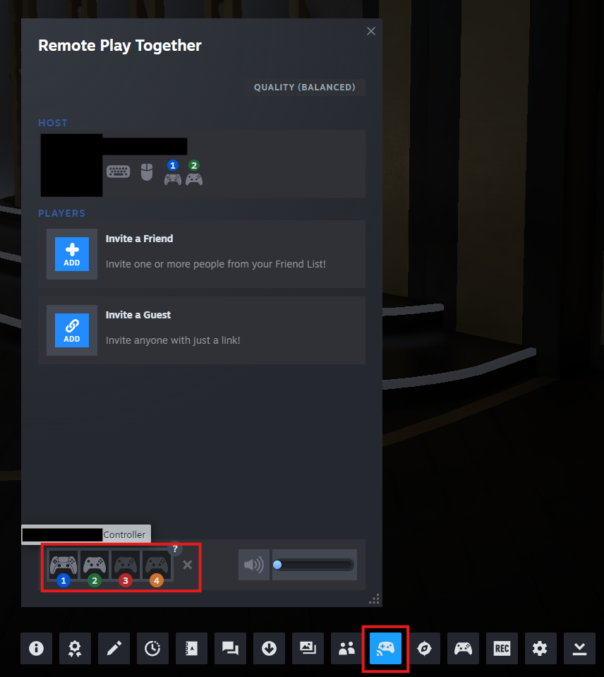
If using a PlayStation controller, disable their use in Steam completely:
- Open your Steam Settings and click on the controller tab.
- Set PlayStation Controller Support to Not Enabled.
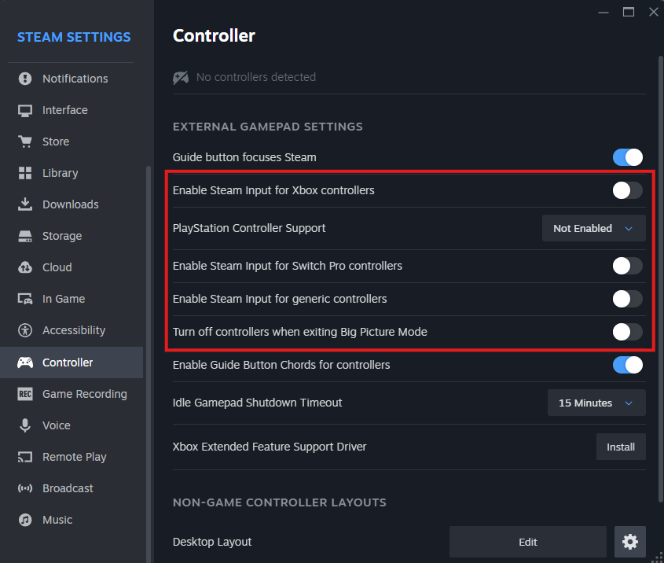
XStreaming Desktop
When using XStreaming Desktop, Yolo should be opened first.
- Start Yolo and confirm Virtual Controller output is ready.
- Open XStreaming Desktop.
- Go to XStreaming settings.
- Open the Gamepad tab.
- Select gamepad 1.
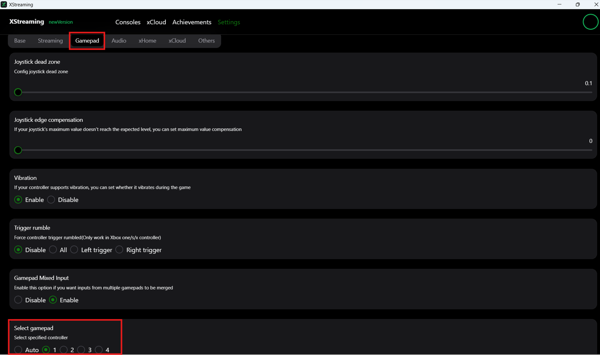
Virtual Controller is ready when Yolo shows the virtual output and your physical controller is selected.
Yolo Script
Yolo Script is the public Yolo script for supported basketball gameplay. This page explains the menu options users need to adjust.
Main
| Option | What It Does |
|---|---|
| Overlay | Choose what Yolo shows on screen: Meter or All. |
| Meter | Turns meter-based timing on or off. |
| No Meter | Turns no-meter timing on or off. |
| Timing Mode | Basic keeps timing simple. Advanced shows separate timing values. |
Use Basic first. Switch to Advanced only when you need separate values for different actions.
Input Mappings
Input mappings decide what each controller input is used for. Set unused inputs to Off. Only map the actions you actually use.
Meter Detection
Choose the meter type and color that match what you use on screen.
Release Method
- Distance is best for most users.
- Size can work better for some setups.
Test both and use whichever gives you the most consistent feedback.
Timing
Basic Timing
Basic mode shows:
- Normal Timing
- Rhythm Timing
- Tempo
Use Basic mode when you want one normal value, one rhythm value, and one tempo value.
Advanced Shot Timing
Advanced mode can show separate values for:
- Normal Shot
- Normal Fading Shot
- Rhythm Shot
- Rhythm Fading Shot
- Go-To Shot
- Dunk Meter
- Layup
- Free Throw
Use Advanced mode when one action feels good but another action needs its own value.
Tempo
Tempo can include Standing Tempo, Fading Tempo, Go-To Tempo, and No Dip Tempo.
If feedback says the tempo is fast or rushed, increase the value. If feedback says the tempo is slow, decrease the value.
No Meter
No Meter can include Rhythm Shot, Go-To Shot, Fade Left, Fade Right, Rhythm No Dip Shot, Tempo, and Go-To Tempo.
For No Meter timing, if feedback is early, increase the timing value. If feedback is late, decrease the timing value.
Extras
Leave Extras off unless you specifically want that behavior.
Adjustment Rules
Change values in small steps. Start with 1 to 3 points at a time.
Timing values, except tempo, can change with server, internet stability, latency, and court type. Use profiles for different scenarios so you can switch quickly instead of retuning every time.
Meter Timing
When Release Method is Distance:
- Early feedback: decrease the timing value.
- Late feedback: increase the timing value.
When Release Method is Size:
- Early feedback: increase the timing value.
- Late feedback: decrease the timing value.
No Meter Timing
- Early feedback: increase the timing value.
- Late feedback: decrease the timing value.
Tempo
- Fast or rushed feedback: increase the tempo value.
- Slow feedback: decrease the tempo value.
Test the same action multiple times and follow the most common feedback. Do not chase one unusual result.
Yolo Troubleshooting
General Yolo setup and output issues only.
Start Here
- Close Yolo.
- Close target apps, remote clients, Steam, Gtuner, Helios, and other controller tools.
- If using Steam, fully close it from the system tray.
- Reconnect your controller and output hardware.
- Open Yolo again.
- Select your capture source.
- Select your output mode.
Yolo Does Not Open
- Download the latest Yolo release again from the setup downloads.
- Move Yolo to a simple folder such as C:\Yolo.
- If Windows blocks the app, allow it from the Windows security prompt.
- Right-click Yolo and choose Run as administrator.
- Restart your PC if Yolo still does not open.
Capture Source Is Missing
- Unplug and reconnect the capture card.
- Use a USB 3.0 port on the PC.
- Close OBS, capture-card software, browser previews, and any app that may already be using the capture card.
- Open Yolo.
- Open Capture Settings and refresh/select the source again.
Black Screen Or Flickering Video
- On PS5, confirm HDCP is off.
- Turn off HDR and VRR.
- Confirm your HDMI cables are connected in the correct order.
- Try a different HDMI cable.
- Try a different USB port for the capture card.
Output Does Not Connect
- Confirm the correct OUTPUT mode is selected.
- Confirm your controller is connected.
- Choose the controller in Input Selection if the mode shows that option.
- Close other controller tools.
- Reopen Yolo before opening the target app or remote client.
Virtual Controller Is Not Showing
- Install ViGEmBus from the setup downloads.
- Install HidHide from the same page.
- Restart your PC.
- Close all target apps, including Steam and remote clients.
- Open Yolo before opening the target app.
- Set OUTPUT to Virtual Controller.
- Select your physical controller in Input Selection.
- Confirm ViGEm Client and HidHide show ready/available status.
Steam Controller Issues And Double Inputs
Use this if Steam sees the wrong controller, one button press acts like two inputs, or your controller input is going to the wrong place.
- With the target app open, press Shift+Tab to open the Steam in-game menu.
- Select the Remote Play Together button.
- Drag and drop your actual controller to the X.
XStreaming Desktop Does Not See The Controller
- Start Yolo first.
- Set OUTPUT to Virtual Controller.
- Confirm the virtual output is ready.
- Open XStreaming Desktop.
- Open XStreaming settings → Gamepad → select gamepad 1.
PS Remote Play Does Not Connect
- Confirm Remote Play is enabled on the console.
- Wake the console before connecting.
- Use wired Ethernet for both PC and console.
- Confirm the PC and console are on the same network.
- If the console does not appear, use Manual and enter the console IP address.
- If the saved console no longer connects, update the console IP.
- If account lookup does not work, try Account ID or Login.
- Check Windows Firewall if Yolo cannot reach the console.
Titan Two Is Not Detected
- Connect Titan Two PROG to the PC.
- Connect Titan Two Output to the console or target device.
- Use data-capable USB cables.
- Confirm you see 3 green lights on the Titan Two device.
- Close Gtuner and Helios before opening Yolo.
- Set OUTPUT to Titan Two.
- Leave Output Protocol on Auto unless your setup requires PS5 or XB.
- Use Program if Yolo asks to program a Titan Two slot.
Still Stuck?
When asking for help, include:
- Your setup type
- Your output mode
- A screenshot of the Yolo output panel
- A short description of what you expected and what happened